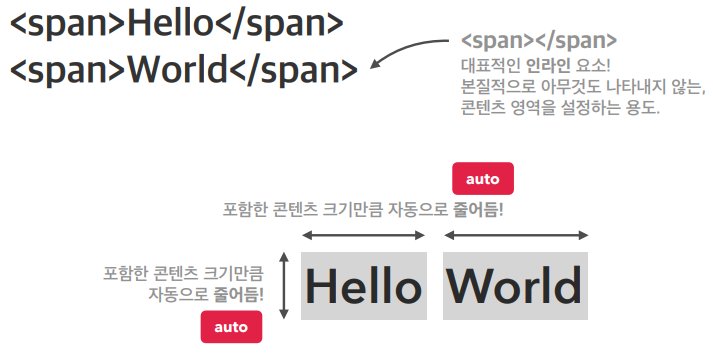

1. b : bold의 약자로서 글자를 진하게 하고자 할 때 사용하는 Tag 이다.
2. strong : b tag와 같이 글자를 진하게 하고자 할 때 사용하며, 차이점은 일반적인 의미없는 강조는 b, 중요한 단어는 strong tag를 사용한다.
또한 시각 장애인이 스크린 리더 프로그램을 통해 음성이 나올때 strongtag는 좀 더 강한 어조로 음성이 나온다.
3. i : italic의 약자로서 글자를 기울이고자 할 때 사용, 위키백과 사전에서 보통 각주를 표시할 때 사용.
4. em : emphasized의 약자로서 글자를 강조하면서 기울이고자 할 때 사용한다.
5. ins : insert(삽입/수정)의 약자로서 문단 내용 중 수정된 글작 있는 경우 글자에 밑줄로 표시해주는 태그이다.
6. s : 문단의 내용 중에 취소하고자 할 때 글자에 취소선 긋기.
7. small : 글자의 원래 크기(16px)보다 3/4 크기로 작게 표시하기 위한 태그.
8. sup : superscript의 약자로서 위첨자를 나타냄
9. sub : subscript의 약자로서 아래첨자를 나타냄.
10. mark : 문단 내용 중에 사용자가 지정한 범위에 마킹을 한 것처럼 배경색이 노란색으로 표시됨.
11. span : tag 자체로는 의미는 없지만 단락(p) 안에서 일부분의 text만 묶어서 css를 적용하고자 할 때 사용한다.
